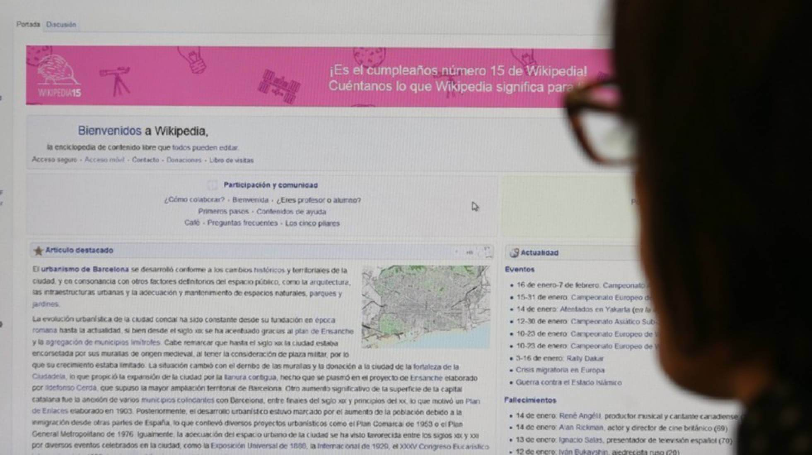
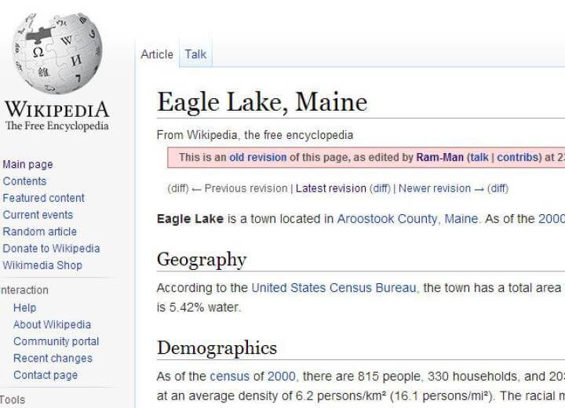

M. VICTORIA NADAL
Madrid - 25 OCT 2016 - 14:49 CEST

Captura de pantalla de la página de inicio de Wikipedia en su 15 cumpleaños.
Cada vez son más las páginas web que incorporan bots, programas informáticos que se comportan como humanos, para realizar tareas como responder a las preguntas de los usuarios, hacer publicidad o abrir cuentas de correo electrónico. Pero, a pesar de los esfuerzos y de su uso extendido, aún están muy lejos de actuar en la Red como lo haría una persona. Esa es la conclusión a la que ha llegado un grupo de ingenieros informáticos del Instituto Alan Turing de Reino Unido, que ha estudiado el comportamiento de estos robots en Wikipedia y ha descubierto que hasta 4,7 millones de las ediciones de los artículos son correcciones que los bots se hacen constantemente entre sí, cayendo en una especie de edición sin fin nada productiva.

Los bots que trabajan en Wikipedia se encargan de tareas que pueden resultar tediosas para las personas, como identificar y deshacer casos de vandalismo, añadir enlaces, corregir la ortografía y guardar la concordancia sintáctica de las oraciones. El problema viene cuando las ediciones que hacen están condicionadas por el país y el lenguaje en el que han sido programados y están influidas por algunos aspectos culturales. Por ejemplo, algunas de estas reversiones vienen por cambiar “Palestina” por “territorio palestino” o “Golfo Pérsico” por “Golfo Arábico”, y así con varios millones de conceptos que no coinciden en las distintas regiones del mundo.
Captura de pantalla de una de las ediciones producida por un 'bot'. WIKIPEDIA
Además, están programados para revisar los cambios que hacen cada cierto tiempo, lo que ayuda a que se produzcan enfrentamientos con otros bots que hacen exactamente lo mismo y se corrigen entre sí cuando encuentran que su última edición ha vuelto a ser modificada. En los cambios que hacen las personas no se dan este tipo de conflictos porque los usuarios de Wikipedia rara vez vuelven a comprobar si los datos que corrigieron están actualizados.
Algunos conflictos, como los de Wikipedia, pueden considerarse inocuos. Otros son más problemáticos y virales, como el que sucedió en Twitter en marzo de este año, cuando Microsoft tuvo que retirar a uno de su bots por tuitear mensajes de contenido racista, sexista y xenófobo. Había sido programado para contestar preguntas y establecer conversaciones con los más jóvenes de la red y aprendió de ellos este comportamiento.
A pesar de los fallos y la falta de eficacia que demuestran en muchas ocasiones, los bots siguen siendo una opción muy útil en las tareas conversacionales. El ejemplo más claro es Siri, la asistente de Apple que resuelve las dudas del usuario a través de mensajes de voz. Pero también hay otros casos, como el diseñado por un estudiante de la Universidad de Stanford, que está programado para ayudar a las personas a recurrir las multas de aparcamiento. En un año ha conseguido anular 160.000 multas y ya funciona en Londres y Nueva York.